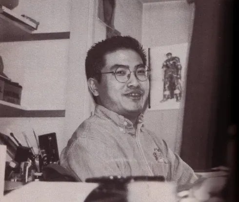

Synopsis
Berserk suit l'histoire de Guts, un guerrier solitaire marqué par un destin cruel. Né sous le cadavre de sa mère et élevé par un mercenaire brutal, il devient un combattant d'exception. Recruté de force par Griffith, le charismatique chef de la Troupe du Faucon, Guts devient son plus fidèle soldat. Mais la quête de pouvoir de Griffith le conduit à trahir ses compagnons dans un rituel démoniaque appelé l'Éclipse, où Guts assiste impuissant à la destruction des siens et au viol de Casca, la femme qu'il aime.
Défiguré et hanté par des créatures démoniaques, il part en quête de vengeance contre Griffith, devenu un être divin, Femto. Armé de son immense épée Dragonslayer, il affronte les monstres de ce monde cauchemardesque, tout en protégeant Casca, traumatisée par les événements.
Kentaro Miura
Kentaro Miura (1966-2021) est le mangaka légendaire derrière Berserk, une œuvre sombre et violente mêlant fantasy, tragédie et psychologie. Passionné de dessin dès l'enfance, il débute sa carrière avec Futatabi en 1985 avant de créer Berserk en 1989. Son style détaillé et son univers impitoyable ont marqué l'histoire du manga. Sa disparition en 2021 laisse Berserk inachevé, mais son impact reste immense.
| Nom | Parution | Nb tomes/chapitres | Genre | Sous-genre |
|---|---|---|---|---|
| Berserk | 1989 - en cours (posthume) | 42 tomes (380+ chapitres) | Seinen | Dark Fantasy, Aventure |
| Gigantomakhia | 2013 - 2014 | 1 tome (7 chapitres) | Seinen | Science-fiction, Fantasy |
| King of Wolves | 1989 | 1 tome | Seinen | Action, Historique |